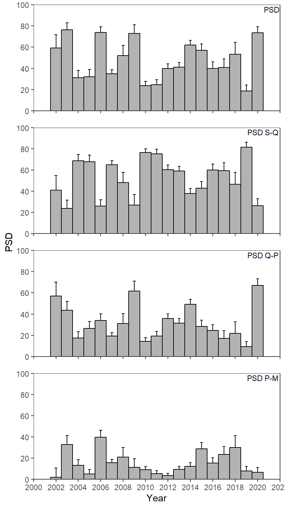

library(tidyverse) # for dplyr, ggplot2 packages
Series Note
This is the second of several posts related to McCarrick et al. (2022).
Introduction
McCarrick et al. (2022) examined the population dynamics of Yellowstone Cutthroat Trout (Oncorhynchus clarkii bouvieri) in Henrys Lake, Idaho over a nearly two decade period. Their Figure 3 showed various proportional stock distribution (PSD) calculations of Cutthroat Trout across years. I use ggplot2 to recreate that figure here. I also modified their plot by adding confidence intervals to the calculations.
The following packages are loaded for use below. A few functions from each of lubridate, FSA, plyr, tidyr, scales, gghrx, and lemon are used with :: such that the entire packages are not attached here.
McCarrick et al. (2022) computed what I am calling an overall PSD1 and what are called “incremental” PSD indices. I assume that these are familar to most fisheries scientists, but they are described in more detail in Chapter 6 of Ogle (2016).2
1 This is the most common PSD measure.
2 This provides a decent description of the overall PSD.
Data Wrangling
Individual Fish Data Frame
McCarrick et al. (2022) provided raw data for Figure 2 as an Excel file in their Data Supplement S1. The same data wrangling, up to where catch-per-unit-effort was calculated, used in this previous post is used here and, thus, will not be discussed in detail.
dat <- readxl::read_xlsx("../2023-3-22_McCarricketal2022_Fig2/download.xlsx",
na=c("","??","QTY =","QTY=","UNK","NO TAG"),
col_types=c("date","numeric","text",
"numeric","numeric","text")) |>
mutate(year=lubridate::year(Date),
year=ifelse(year==1905,2002,year)) |>
filter(!is.na(year)) |>
select(species=Species,year,length,weight) |>
mutate(species=case_when(
species %in% c("YCT","Yct") ~ "YCT",
species %in% c("UTC","CHB","CHUB") ~ "UTC",
TRUE ~ species
)) |>
filter(species %in% c("YCT","UTC")) |>
mutate(species2=plyr::mapvalues(species,
from=c("YCT","UTC"),
to=c("Cutthroat Trout","Utah Chub"))) |>
mutate(gcat=FSA::psdAdd(len=length,species=species2))
FSA::headtail(dat)#R| species year length weight species2 gcat
#R| 1 YCT 2002 150 NA Cutthroat Trout substock
#R| 2 YCT 2002 160 NA Cutthroat Trout substock
#R| 3 YCT 2002 160 NA Cutthroat Trout substock
#R| 19900 YCT 2020 391 550 Cutthroat Trout quality
#R| 19901 YCT 2020 284 229 Cutthroat Trout stock
#R| 19902 YCT 2020 440 853 Cutthroat Trout qualityPSD Summary Data Frame
The data frame was filtered to only Cutthroat Trout (the only species shown in Figure 3) and sub-stock-sized fish were removed (PSD calculations do not consider sub-stock-sized fish).
psd_dat <- dat |>
filter(species=="YCT",gcat!="substock")The calculation of PSD values begins by counting the number of fish in each of the remaining Gabelhouse length categories, within each year.
psd_dat <- psd_dat |>
group_by(year,gcat) |>
summarize(count=n()) |>
ungroup()
FSA::headtail(psd_dat)#R| year gcat count
#R| 1 2002 stock 20
#R| 2 2002 quality 28
#R| 3 2002 preferred 1
#R| 61 2020 stock 52
#R| 62 2020 quality 132
#R| 63 2020 preferred 13This data frame was then made wider by creating columns with the length category names, each with the “count” in that category underneath it for each year.
psd_dat <- psd_dat |>
pivot_wider(names_from=gcat,values_from=count)
FSA::headtail(psd_dat)#R| year stock quality preferred memorable trophy
#R| 1 2002 20 28 1 NA NA
#R| 2 2003 31 57 43 NA NA
#R| 3 2004 141 36 27 1 NA
#R| 17 2018 34 16 22 1 NA
#R| 18 2019 176 20 17 3 NA
#R| 19 2020 52 132 13 NA NAFor example, in 2002 there were 20 stock- to quality-sized fish, 28 quality- to preferred-size fish, 1 preferred- to memorable-sized fish, and no fish in the other categories. Each PSD calculation requires the total number of stock-size and larger fish as the denominator; i.e., 49 fish in 2002. In addition, the overall PSD calculation requires the total number of quality-sized and larger fish as the numerator; i.e., 28 fish in 2002. These two quantities are computed in mutate() below, but note that rowwise() is used before that to force the calculations to be computed by row (i.e., by year).3
3 If rowwise is not used then, for example, sum(stock+quality) would be the sum of both the stock and quality columns; i.e., the sum across all years.
psd_dat <- psd_dat |>
rowwise() |>
mutate(qualityplus=sum(quality,preferred,memorable,trophy,na.rm=TRUE),
stockplus=sum(stock,qualityplus,na.rm=TRUE))
FSA::headtail(psd_dat)#R| year stock quality preferred memorable trophy qualityplus stockplus
#R| 1 2002 20 28 1 NA NA 29 49
#R| 2 2003 31 57 43 NA NA 100 131
#R| 3 2004 141 36 27 1 NA 64 205
#R| 17 2018 34 16 22 1 NA 39 73
#R| 18 2019 176 20 17 3 NA 40 216
#R| 19 2020 52 132 13 NA NA 145 197The overall PSD is calculated as quality-sized and larger fish divided by stock-sized and larger fish multiplied by 100. The three incremental PSD values are calculated as the number in the incremental length group (e.g., stock- to quality-sized) divided by stock-sized and larger fish multiplied by 100. These calculations are made below within mutate().4
4 The incremental PSD names are within single back-ticks because the name contains a space (and a hyphen).
psd_dat <- psd_dat |>
mutate(PSD=qualityplus/stockplus*100,
`PSD S-Q`=stock/stockplus*100,
`PSD Q-P`=quality/stockplus*100,
`PSD P-M`=preferred/stockplus*100) |>
ungroup()
FSA::headtail(psd_dat)#R| year stock quality preferred memorable trophy qualityplus stockplus PSD
#R| 1 2002 20 28 1 NA NA 29 49 59.18367
#R| 2 2003 31 57 43 NA NA 100 131 76.33588
#R| 3 2004 141 36 27 1 NA 64 205 31.21951
#R| 17 2018 34 16 22 1 NA 39 73 53.42466
#R| 18 2019 176 20 17 3 NA 40 216 18.51852
#R| 19 2020 52 132 13 NA NA 145 197 73.60406
#R| PSD S-Q PSD Q-P PSD P-M
#R| 1 40.81633 57.142857 2.040816
#R| 2 23.66412 43.511450 32.824427
#R| 3 68.78049 17.560976 13.170732
#R| 17 46.57534 21.917808 30.136986
#R| 18 81.48148 9.259259 7.870370
#R| 19 26.39594 67.005076 6.598985Finally, this data frame should be made longer such that the calculated PSD values will appear under one column (called values) and another column will be created with the name of the PSD metric. This process begins by restricting the data frame to the year and all calculated PSD values, then pivoting the values in all of the PSD columns into one column with the names of the PSD metric stored in metric, and then factoring metric with the levels controlled so that they will be plotted in the same order as in Figure 3. This new data frame has a new name, as the original psd_dat data frame is used further below.
psd_dat2 <- psd_dat |>
select(year,contains("PSD")) |>
pivot_longer(cols=contains("PSD"),names_to="metric") |>
mutate(metric=factor(metric,levels=c("PSD","PSD S-Q","PSD Q-P","PSD P-M")))
FSA::headtail(psd_dat2)#R| year metric value
#R| 1 2002 PSD 59.183673
#R| 2 2002 PSD S-Q 40.816327
#R| 3 2002 PSD Q-P 57.142857
#R| 74 2020 PSD S-Q 26.395939
#R| 75 2020 PSD Q-P 67.005076
#R| 76 2020 PSD P-M 6.598985This data frame, now called psd_dat2, is ready for recreating Figure 3.
Recreating Figure 3
Figure 3 is a simple bar plot facetted across years similar to the CPE plot in this previous post. Thus, I don’t discuss the details further here.
ggplot(data=psd_dat2,mapping=aes(x=year,y=value)) +
geom_col(color="black",fill="gray70",width=1) +
geom_text(mapping=aes(label=metric),x=Inf,y=Inf,vjust=1.25,hjust=1.05,size=3,
check_overlap=TRUE) +
scale_y_continuous(name="PSD",limits=c(0,100),expand=expansion(mult=0),
breaks=scales::breaks_width(20)) +
scale_x_continuous(name="Year",
limits=c(2000,2022),breaks=scales::breaks_width(2),
expand=expansion(mult=0)) +
lemon::facet_rep_wrap(vars(metric),ncol=1) +
theme_bw() +
theme(panel.grid=element_blank(),
strip.background=element_blank(),
strip.text=element_blank())
Adding Confidence Intervals
I wanted to see if I could make Figure 3 as above, but add confidence intervals to the PSD calculations.5
5 The authors added CIs to the relative weight calculations in their Figure 4, but did not do that here for their PSD calculations.
As discussed in Ogle (2016) confidence intervals for a PSD can be made from binomial distribution theory using binCI() from FSA. This is a simple process of giving binCI() the number of “successes” (i.e., the numerator in the PSD calculation), the number of “trials”(i.e., the denominator), and the type of algorithm to use (we will use the “Wilson” algorithm here). For example, the CI for the overall PSD in 2002 is computed below.
FSA::binCI(29,49,type="wilson")*100#R| 95% LCI 95% UCI
#R| 45.24732 71.78476This becomes complicated here for several reasons:
- The CIs are computed across multiple years.
- The numerators differ among the PSD metrics (e.g., quality-sized and larger fish for the overall PSD but just quality-sized fish for PSD S-Q).
binCI()returns two values rather than 1 (thus, complicating the use ofmutate()).binCI()returns a matrix with column names rather than a named vector.
Given these issues, confidence intervals the PSD, PSD S-Q, etc. will each be calculated separately and then combined into a single data frame. I begin by calculating the CIs for the PSD.
Here we return to the wide psd_dat data frame from above. The calculation will be for each year so again use rowwise(). FSA::binCI() will be used with mutate() but its result must first be converted to a vector with as.vector() (addresses last issue above) and then put in a list(). In this case the ci “variable” will be a list with two items (the lower and upper CI values) for each year. We want to get the two values out of this list and into their own variables, which is accomplished with unnest_wider() from tidyr (addressing the third issue above). The results from binCI() (after as.vector()) were unnamed, so names_sep= must be used in unnest_wider(). With this set to "", the unnested variables will be the original name (“ci”) followed by sequential numbers (i.e., “ci1” and “ci2” here). Finally,the data frame is reduced to the year, PSD, ci1, and ci2 variables, but PSD is renamed value along the way.6
6 This renaming is necessary for bind_rows() further below.
tmp1 <- psd_dat |>
rowwise() |>
mutate(ci=list(as.vector(FSA::binCI(qualityplus,stockplus,type="wilson")))) |>
tidyr::unnest_wider(ci,names_sep="") |>
select(year,value=PSD,ci1,ci2)
FSA::headtail(tmp1)#R| year value ci1 ci2
#R| 1 2002 59.18367 0.4524732 0.7178476
#R| 2 2003 76.33588 0.6837273 0.8279848
#R| 3 2004 31.21951 0.2527076 0.3785916
#R| 17 2018 53.42466 0.4209895 0.6440796
#R| 18 2019 18.51852 0.1390441 0.2423283
#R| 19 2020 73.60406 0.6703995 0.7926523This exact code is repeated for PSD S-Q but making sure that stock is the first argument to binCI(), the new value variable comes from PSD S-Q, and the resulting data frame is given a different name.
tmp2 <- psd_dat |>
rowwise() |>
mutate(ci=list(as.vector(FSA::binCI(stock,stockplus,type="wilson")))) |>
tidyr::unnest_wider(ci,names_sep="") |>
select(year,value=`PSD S-Q`,ci1,ci2)This process is repeated for the other two metrics.
tmp3 <- psd_dat |>
rowwise() |>
mutate(ci=list(as.vector(FSA::binCI(quality,stockplus,type="wilson")))) |>
tidyr::unnest_wider(ci,names_sep="") |>
select(year,value=`PSD Q-P`,ci1,ci2)tmp4 <- psd_dat |>
rowwise() |>
mutate(ci=list(as.vector(FSA::binCI(preferred,stockplus,type="wilson")))) |>
tidyr::unnest_wider(ci,names_sep="") |>
select(year,value=`PSD P-M`,ci1,ci2)These four temporary data frames are bound together with a metric variable added to indicate which PSD metric appears in each row of the new data frame. Additionally, ci1 and ci2 were renamed to LCI and UCI for clarity, each CI endpoint was muliplied by 100 to put it on the same scale as the point estimates (i.e., percentages rather than proportions returned from binCI()), and metric was factored with controlled levels as above.
psd_dat3 <- bind_rows(list("PSD"=tmp1,"PSD S-Q"=tmp2,"PSD Q-P"=tmp3,"PSD P-M"=tmp4),
.id="metric") |>
rename(LCI=`ci1`,UCI=`ci2`) |>
mutate(LCI=LCI*100,UCI=UCI*100,
metric=factor(metric,levels=c("PSD","PSD S-Q","PSD Q-P","PSD P-M")))
FSA::headtail(psd_dat3)#R| metric year value LCI UCI
#R| 1 PSD 2002 59.183673 45.247319 71.78476
#R| 2 PSD 2003 76.335878 68.372730 82.79848
#R| 3 PSD 2004 31.219512 25.270764 37.85916
#R| 74 PSD P-M 2018 30.136986 20.822591 41.43737
#R| 75 PSD P-M 2019 7.870370 4.971693 12.24137
#R| 76 PSD P-M 2020 6.598985 3.896693 10.96152The same code used above to recreate Figure 3 is repeated below, but geom_errorbar() is used with LCI mapped to ymin= and UCI mapped to ymax= to form the confidence intervals. geom_errorbar() is before geom_col() which gives the appearance of only showing the upper portion of the confidence interval (i.e., the lower portion is behind the bar). width=0.25 was used to narrow the “caps” on the intervals.
ggplot(data=psd_dat3,mapping=aes(x=year,y=value)) +
geom_errorbar(mapping=aes(ymin=LCI,ymax=UCI),width=0.25) +
geom_col(color="black",fill="gray70",width=1) +
geom_text(mapping=aes(label=metric),x=Inf,y=Inf,vjust=1.25,hjust=1.05,size=3,
check_overlap=TRUE) +
scale_y_continuous(name="PSD",limits=c(0,100),expand=expansion(mult=0),
breaks=scales::breaks_width(20)) +
scale_x_continuous(name="Year",
limits=c(2000,2022),breaks=scales::breaks_width(2),
expand=expansion(mult=0)) +
lemon::facet_rep_wrap(vars(metric),ncol=1) +
theme_bw() +
theme(panel.grid=element_blank(),
strip.background=element_blank(),
strip.text=element_blank())
References
McCarrick, D. K., J. C. Dillon, B. High, and M. C. Quist. 2022. Population dynamics of Yellowstone Cutthroat Trout in Henrys Lake, Idaho. Journal of Fish and Wildlife Management 13(1):169–181.
Reuse
Citation
BibTeX citation:
@online{h.ogle2023,
author = {Derek H. Ogle},
title = {McCarrick Et Al. (2022) {PSD} {Plot}},
date = {2023-03-25},
url = {https://fishr-core-team.github.io/fishR//blog/posts/2023-3-25_McCarricketal2022_Fig3},
langid = {en}
}
For attribution, please cite this work as:
Derek H. Ogle. 2023, March 25. McCarrick et al. (2022) PSD Plot. https://fishr-core-team.github.io/fishR//blog/posts/2023-3-25_McCarricketal2022_Fig3.